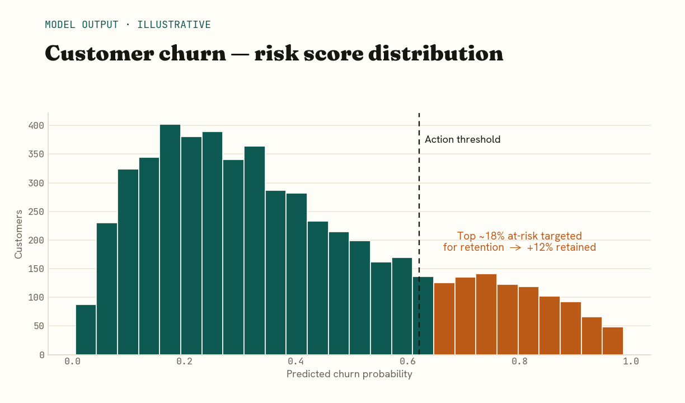
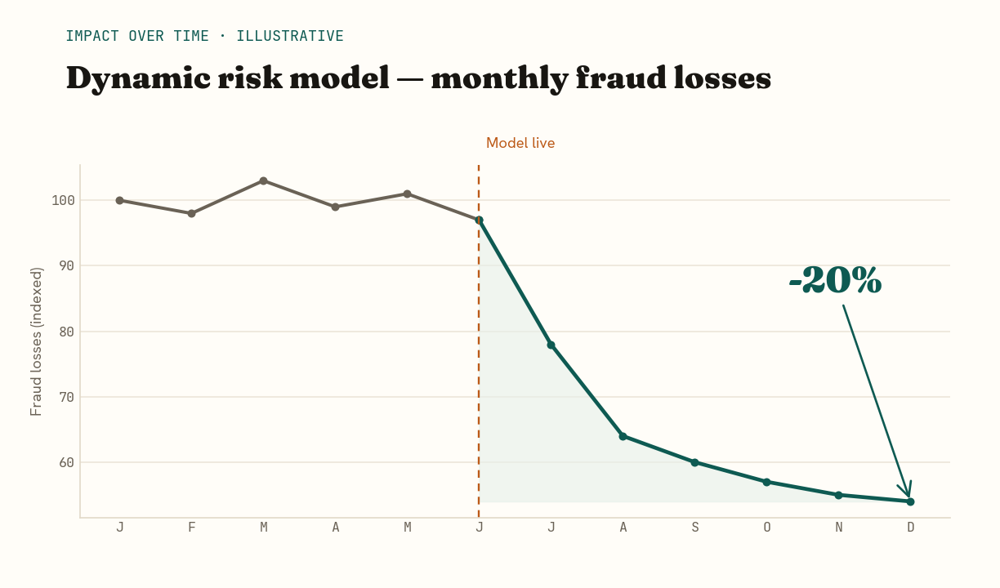
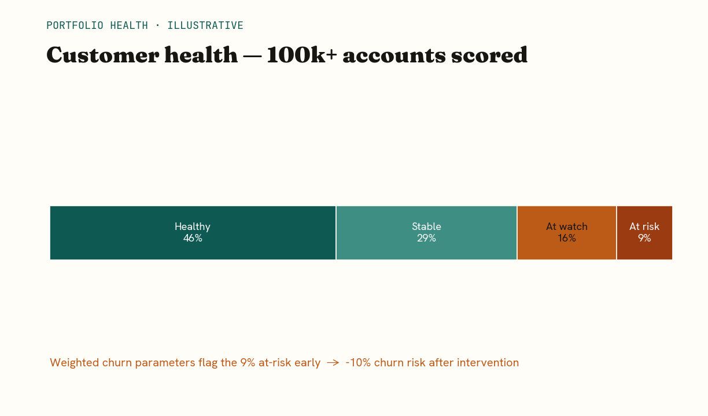
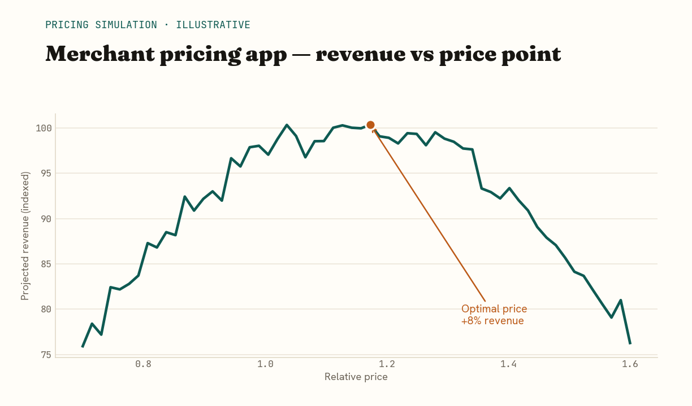
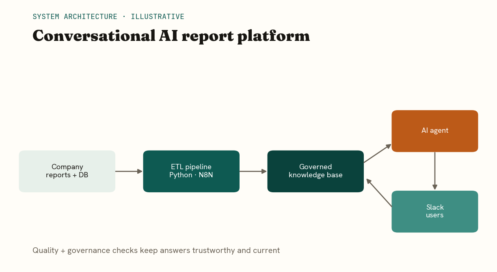
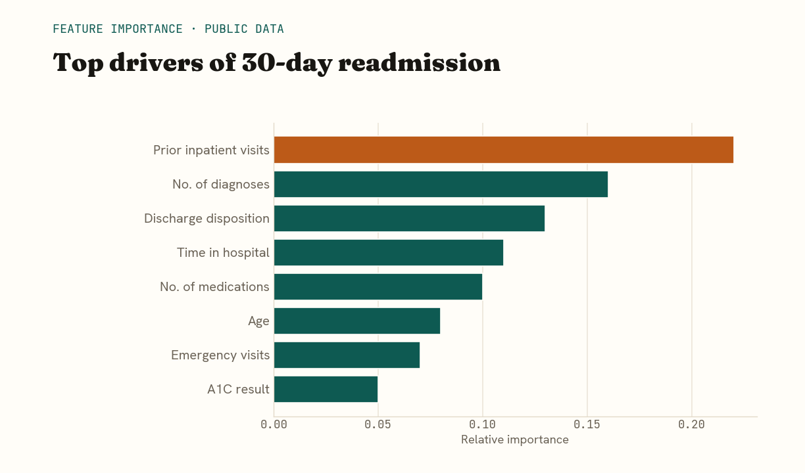
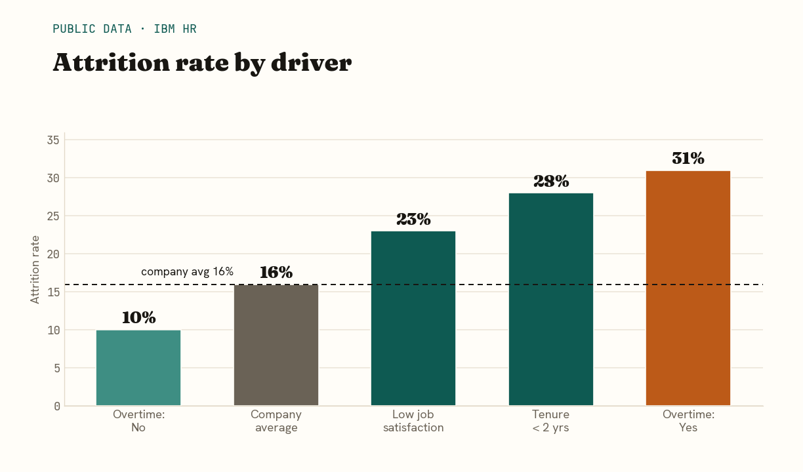
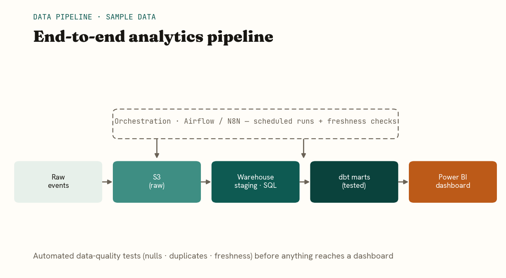

Selected work, end to end.
From raw data to the decision it drove. Visuals are illustrative rebuilds with sample data, since the original fintech dashboards are confidential.
Predicting customer churn across African markets

The challenge
Flutterwave needed to know which customers were about to leave — early enough to act — across nine markets and millions of transactions. Gut feel wasn't enough; retention teams needed a ranked, trustworthy list of who to save first.
What I did
- Pulled and cleaned 500,000+ transactions with SQL across markets.
- Engineered behavioural features — recency, frequency, value and trend.
- Trained and tuned an XGBoost model in Python; validated on a holdout set.
- Surfaced churn scores in an interactive Power BI dashboard for the retention team.
- Set an action threshold so teams focused only on the highest-risk segment.
A dynamic risk-rating model to cut fraud

The challenge
Fraud losses were being caught too late and reviewed too manually. The business needed a systematic, automated way to score every merchant's risk and feed that into downstream checks.
What I did
- Defined risk signals together with risk and compliance stakeholders.
- Built a Python + SQL model classifying 1,000+ merchants into tiers.
- Automated extraction, transformation and scoring on a schedule.
- Wrote ratings to a dedicated risk table feeding fraud checks.
- Tracked impact and tuned thresholds as patterns shifted.
A customer-health dashboard for 100k+ accounts

The challenge
Leadership lacked a single, trustworthy view of customer health. Different teams used different numbers, which made aligning retention strategy across markets slow and contentious.
What I did
- Agreed weighted churn parameters with stakeholders so everyone trusted one definition.
- Modelled the data and built the metric logic in Power BI with DAX.
- Designed an executive dashboard scoring 100,000+ customers by health.
- Presented the findings to global stakeholders to align strategy.
A pricing app that automated merchant analysis

The challenge
Pricing analysis for 50+ merchants was manual, slow and inconsistent — and prone to leaving revenue on the table.
What I did
- Designed scalable SQL tables with data engineers for clean storage.
- Built a Streamlit app in Python that automated the pricing analysis.
- Added dynamic visualisations so the team could see the revenue-optimal price.
A conversational AI platform for company reports

The challenge
Reports and metrics were scattered across the company. People wasted time hunting for the right one — and weren't always sure it was current or trustworthy.
What I did
- Built an ETL pipeline with Python and N8N to consolidate report metadata.
- Created a governed knowledge base kept up to date automatically.
- Connected an AI agent so anyone could ask questions in Slack and get answers.
- Added data-quality and governance checks so answers stayed trustworthy.
The same approach, beyond fintech
Self-initiated analyses on public and sample data — to show how the method travels across industries. Not client work; built to demonstrate the craft.
Predicting 30-day hospital readmissions

The challenge
Patients readmitted within 30 days signal gaps in care — and cost hospitals heavily. Could a model flag high-risk patients at discharge, so care teams intervene with the right people first?
What I did
- Loaded the UCI Diabetes 130-US Hospitals dataset — ~100,000 inpatient encounters.
- Cleaned and encoded clinical features: diagnoses, medications, prior visits, discharge type.
- Trained a gradient-boosted classifier to predict 30-day readmission, handling class imbalance.
- Evaluated with ROC-AUC and a confusion matrix; set a risk threshold for action.
- Ranked the drivers so the output explains why a patient is high-risk, not just who.
Why employees leave — an attrition model

The challenge
Replacing an employee can cost more than half their salary. HR needed to know not just who might leave, but why — so they could pull the levers that actually matter.
What I did
- Loaded the IBM HR Attrition dataset — 1,470 employees, 35 attributes.
- Explored the drivers: overtime, tenure, income, distance, satisfaction.
- Trained a classifier to predict attrition and ranked feature importance.
- Translated the model into a plain-English retention action list for HR.
An end-to-end analytics pipeline

The challenge
A dashboard is only as trustworthy as the pipeline behind it. This project turns messy, late, raw events into clean, tested, dashboard-ready data — automatically, every day.
What I did
- Ingested raw event data into cloud storage (S3) in scheduled batches.
- Loaded raw → staging in the warehouse with SQL.
- Transformed staging → analytics marts with dbt, adding tests for nulls and duplicates.
- Orchestrated the runs on a schedule with freshness checks and alerting.
- Served clean marts to a Power BI dashboard stakeholders can actually trust.
Want the full story?
Happy to walk through any of these in detail, or talk about what your data could be telling you.